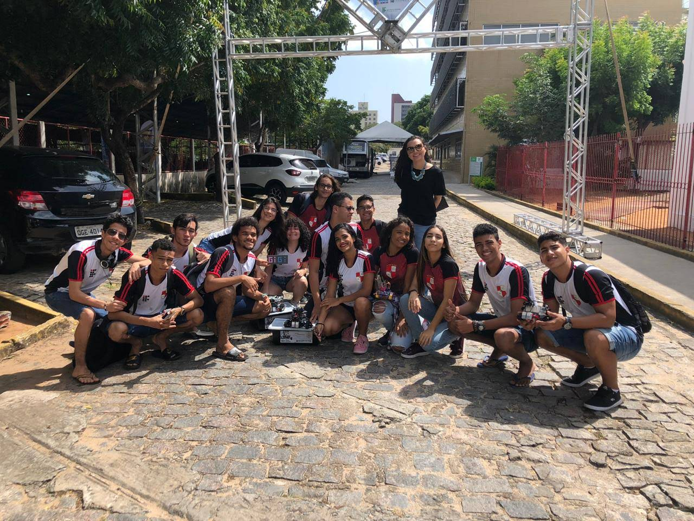
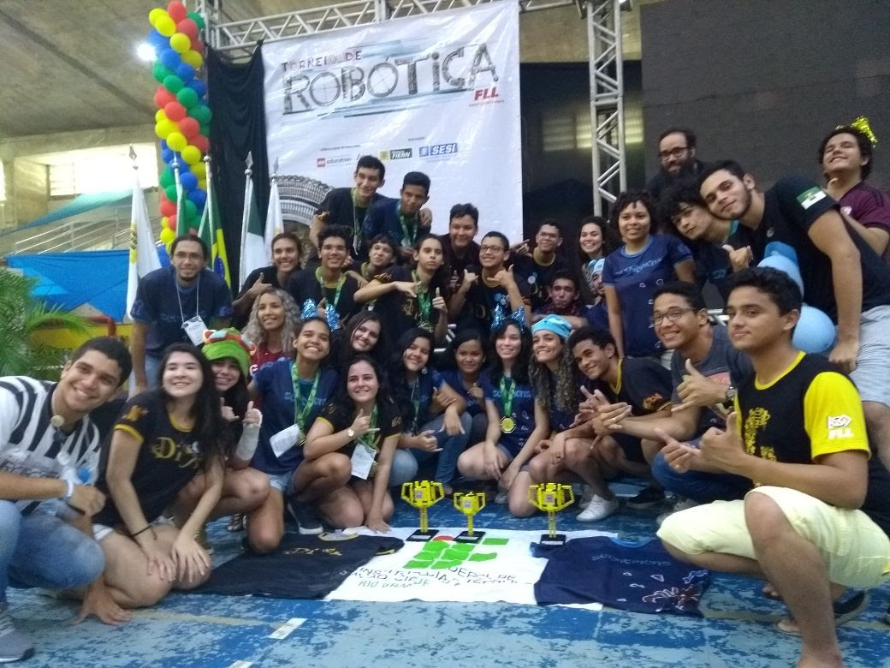

Olá, bem vindo ao MARIA (Movimento Aberto de Robótica, Inovação e Automação), localizado no IFRN campi Natal-Zona norte. O MARIA é um laboratório voltado a tecnologia, sendo composto por alunos de todos os cursos disponivéis no campus.

O MARIA foi idealizado pelo professores Pedro Ivo e Arthur Salgado, a ideia surgiu após eles notarem que existiam poucas mulheres inseradas nos cursos voltados para a área tecnologica, com isso idealizaram o laboratório com um nome feminino, o que serviu perfeitamente para a abreviação do nome do laboratório.
